Introducción
PitWall Lap es la app del piloto. Tiene seis zonas, que salen al abrirla en el menú principal:
- Lap: conecta con el cronómetro de la pista y te canta los tiempos.
- Calendario: tus carreras, con avisos en el móvil.
- Entrenamientos: las tandas de rodaje que has grabado.
- Entrenos de competición: los que ha guardado el servidor, descargables para verlos sin conexión.
- Resultados: carreras terminadas y tus propios archivos (Excel, PDF o fotos).
- Ajustes: idioma, estrategia de neumáticos y avisos de voz.
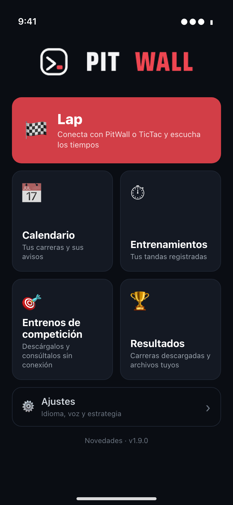
La app funciona con PitWall Manager (el servidor de la pista), con el cronómetro TicTac antiguo (InfoLap) y con el TicTac nuevo. Está en 8 idiomas: castellano, catalán, euskera, inglés, italiano, francés, portugués y neerlandés; al abrirla toma el del móvil.
Permisos del móvil
La app te pide permisos solo cuando los necesita:
- Red local (iPhone): para encontrar el servidor o el cronómetro de la pista en la WiFi. Si lo niegas, iOS descarta en silencio las búsquedas y Lap no encontrará nada aunque todo esté bien; se arregla en Ajustes del iPhone → PitWall Lap → Red local.
- Notificaciones: la primera vez que guardas una carrera con avisos. Sin ellas la carrera se guarda, pero no sonará ningún aviso.
- Cámara y Fotos: solo si añades una foto a Resultados.
Lap: escuchar los tiempos
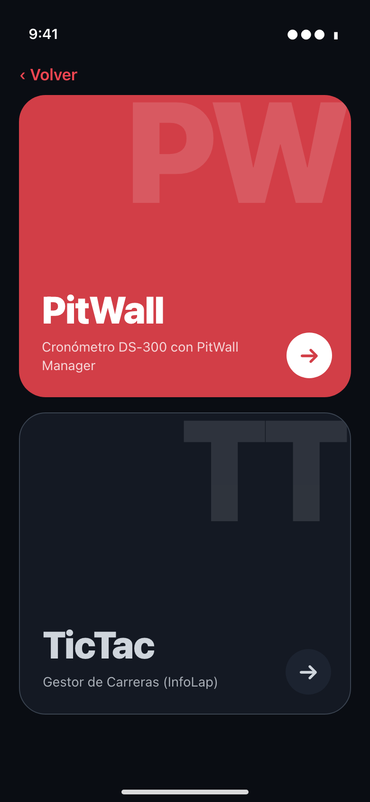
Entra en Lap y elige la fuente de tiempos:
- PitWall: el servidor de la pista (PitWall Manager).
- TicTac: el cronómetro TicTac Slot, sin servidor detrás.
La app busca la fuente sola en la red en unos segundos. Si no la encuentra, te deja escribir la IP a mano una vez y la recuerda para la próxima. Ese recuerdo también lo usan Entrenos de competición y Resultados para hablar con el servidor.
Elegir actividad (PitWall)
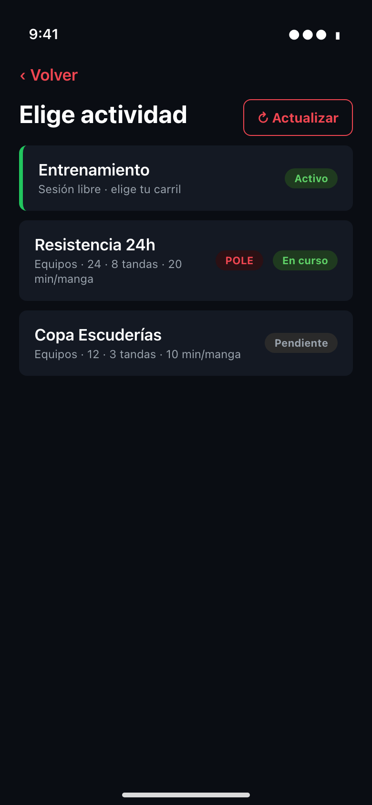
Si el servidor tiene varias carreras, o carrera y entrenamiento a la vez, te deja elegir. Si solo hay una cosa, entra directamente en ella.
- Actualizar: el botón de arriba a la derecha (o tirar de la lista hacia abajo) vuelve a preguntar al servidor, sin salir de la pantalla. Úsalo si el director acaba de preparar la carrera o el entreno. Desde «Sin actividad» o un error, si al actualizar aparece una sola actividad, entra directo en ella.
- Después eliges tu tanda y tu nombre o equipo; de ahí pasas a tu pantalla de carrera.
Tu pantalla de carrera
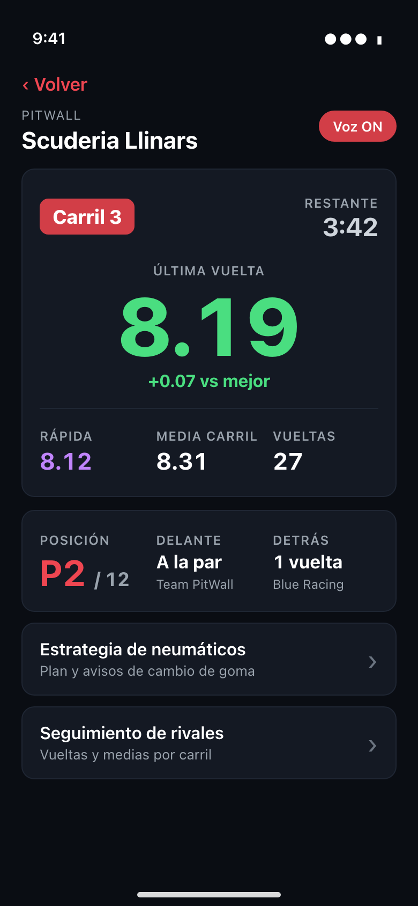
Está pensada para mirarla de reojo: la última vuelta en grande, en morado si es tu mejor, en verde si estás a menos de un 2 % de ella y en ámbar si vas más lento, con la diferencia debajo; tu posición y los gaps con el rival de delante y el de detrás. Si el director pausa, para (STOP) o termina la manga, la app lo muestra y te lo dice por voz.
La voz canta cada vuelta, los cambios de posición, la mitad de la manga, el último minuto y los últimos 30 segundos, y, si lo activas, cada pocos minutos la media de carril, la media de carrera, los gaps y la «media para subir». Todo eso se configura en Ajustes (ver más abajo) y se puede cambiar sobre la marcha en Voz y ajustes, plegado bajo tu pantalla.
La estrategia de neumáticos (carreras de resistencia) recomienda cuándo cambiar y, si la carrera lleva el control de neumáticos del servidor, muestra los juegos disponibles y el último cambio. Se puede apagar en Ajustes.
Entrenamiento libre y entreno de competición
Si en «Elige actividad» aparece Entrenamiento, hay una sesión de rodaje en marcha:
- Entreno libre: eliges tu carril y la app sigue ese carril.
- Entreno de competición: los equipos rotan de carril en cada heat, así que eliges tu equipo o piloto (la lista muestra el carril que ocupa cada uno ahora, o Descansa) y la app te sigue allí donde vayas. Al empezar cada heat la voz te dice «Tu turno, carril N»; si ese heat descansas, la pantalla lo muestra y no suena nada de los demás.
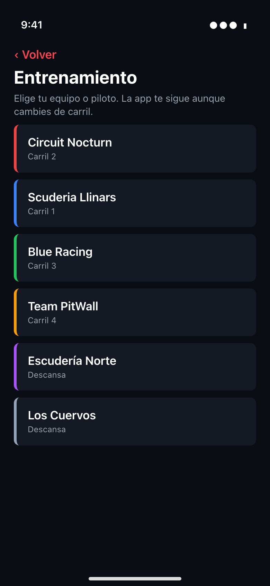
Con Entreno GO (en tu pantalla, en modo entrenamiento) la app graba tus vueltas como una tanda propia; al parar, la guarda en Entrenamientos.
Calendario de carreras
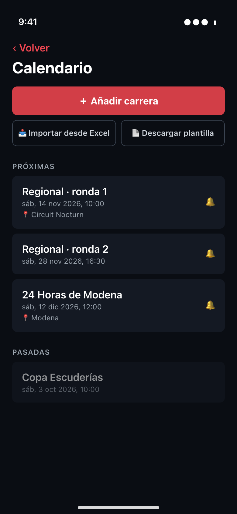
El calendario guarda tus carreras en el móvil y te avisa con notificaciones, sin necesidad de servidor ni de conexión. Muestra las próximas (la más cercana primero) y las pasadas. Toca una carrera para editarla o borrarla.
Añadir una carrera a mano
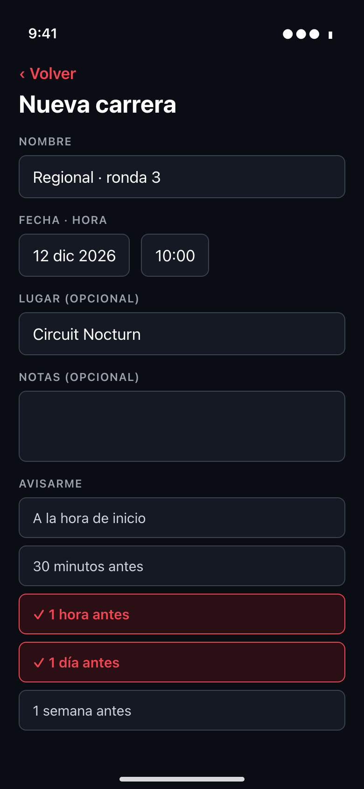
Pulsa ＋ Añadir carrera y rellena nombre, fecha y hora (obligatorios), y opcionalmente lugar y notas. En Avisarme marca los avisos que quieras:
- a la hora de inicio;
- 30 minutos antes;
- 1 hora antes;
- 1 día antes;
- 1 semana antes.
Por defecto una carrera nueva avisa 1 día y 1 hora antes. Solo se programan los avisos que aún no han pasado. La primera vez, el móvil te pedirá permiso de notificaciones.
Añadir carreras de pitwall.es
El botón Carreras de pitwall.es abre el calendario público de carreras de slot de pitwall.es (el mismo del buscador de carreras de la web), con las próximas agrupadas por mes. Necesita conexión a internet. Cada carrera indica si está Verificada o es Encontrada por IA; en estas, comprueba la fecha en la web del organizador con Web ↗.
- Filtra como en la web: escribe en el buscador (nombre, campeonato, club, ciudad o país) y usa los botones País, Tipo y Campeonato. Todo se combina; Quitar filtros los borra de golpe.
- Pulsa ＋ para añadir una carrera suelta, o márcalas y pulsa Añadir (n). Seleccionar todas marca solo las que se ven con los filtros puestos.
- Se apuntan a las 9:00 del primer día con avisos 1 día y 1 hora antes; después puedes cambiarlo como cualquier otra carrera. Las que ya tienes en el calendario salen como Añadida.
Importar muchas carreras desde un Excel
Si tienes el calendario de la temporada en una hoja de cálculo, no hace falta teclear cada carrera.
- Pulsa Descargar plantilla. La app genera un Excel en tu idioma y abre el menú de compartir: guárdalo en Archivos, envíatelo por correo o por AirDrop.
- Ábrelo en Excel, Numbers u otro programa y rellena una carrera por fila en la hoja Carreras. Borra las dos filas de ejemplo. La hoja Instrucciones resume las reglas.
- Guárdalo como .xlsx y vuelve a la app: Importar desde Excel y elige el archivo.
- La app te enseña una vista previa antes de guardar nada: las carreras que se importarán, las que ya estaban y las filas con error. Confirma con Importar.
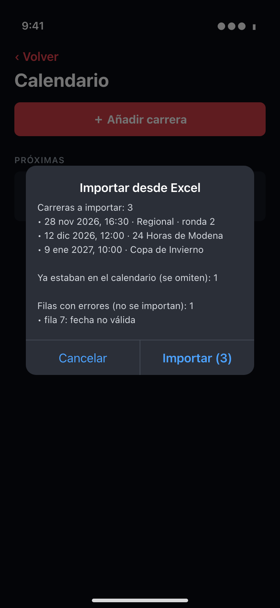
Las columnas de la plantilla son:
- Nombre (obligatoria): el nombre de la carrera.
- Fecha (obligatoria): dd/mm/aaaa; vale también aaaa-mm-dd o una fecha de Excel.
- Hora (obligatoria): hh:mm. Si la fecha de Excel ya lleva hora, vale esa.
- Lugar (opcional): el circuito o la sede.
- Notas (opcional): lo que quieras recordar.
- Avisos (opcional): separados por comas, entre hora, 30min, 1h, 1d y 1sem. Vacío = 1d, 1h.
Cosas que conviene saber:
- Las cabeceras pueden ir en cualquiera de los 8 idiomas, en otro orden o con otro nombre habitual (Carrera, Circuito, Date…), y puede haber filas de título antes de ellas.
- Una fila con error no impide importar las demás; la vista previa dice la fila y el motivo (falta el nombre, fecha no válida, hora no válida).
- Si una carrera ya está en el calendario (mismo nombre y mismo momento), se omite, así que puedes importar el mismo archivo otra vez sin duplicar.
- Un aviso que la app no entiende se ignora y te lo dice.
- Funciona con Excel (.xlsx o .xls). Si exportas desde otro programa, guarda como Excel.
Entrenamientos
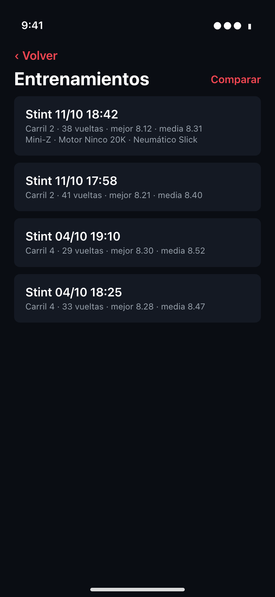
Aquí están las tandas de rodaje que has grabado con Entreno GO. Abre una para ver su gráfica (vueltas y media móvil) y apuntar los datos del coche (modelo, motor, neumático, llanta, corona y piñón). Con Comparar eliges de 2 a 4 tandas y las ves superpuestas en una sola gráfica, con su consistencia. Todo se guarda en el móvil.
Entrenos de competición
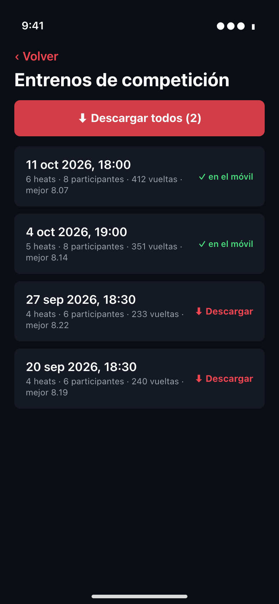
Cuando termina un entreno de competición, PitWall Manager lo guarda. Esta zona te deja descargarlo al móvil para consultarlo cuando quieras, también sin conexión.
- La lista junta los que ya tienes (✓ en el móvil) y los del servidor (⬇ Descargar). Toca uno del servidor y se descarga y se abre. Con varios pendientes aparece Descargar todos.
- Cada fila muestra la fecha, los heats, los participantes, las vueltas y la mejor vuelta.
- La sesión que está en marcha ahora no aparece hasta que se cierra.
- Con el servidor apagado o fuera de la WiFi se ven solo los descargados. Para listar los del servidor hace falta haber entrado alguna vez en Lap → PitWall, para que la app recuerde su dirección.
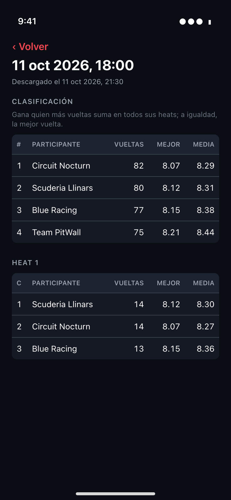
El detalle tiene la clasificación de la sesión (gana quien más vueltas suma en todos sus heats; a igualdad, la mejor vuelta) y, heat a heat, las vueltas, la mejor y la media de cada carril con su participante. Borrar del móvil quita la copia local; el entreno sigue en el servidor.
Resultados
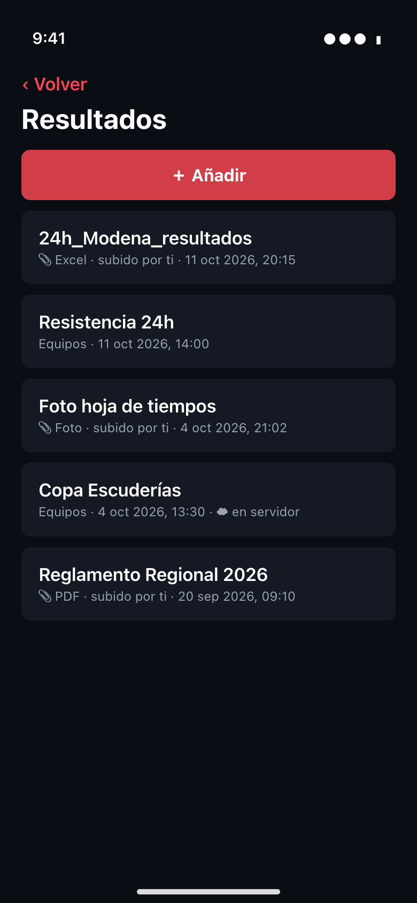
Resultados junta, ordenado por fecha, dos tipos de cosas:
- Carreras terminadas en PitWall: la app guarda el dossier de resultados al acabar la carrera, así que lo ves sin conexión. Si el servidor responde, también aparecen las que no seguiste en directo (marcadas ☁ en servidor). Dentro de cada una tienes clasificación y el Excel comparativa para abrirlo o compartirlo.
- Tus archivos: pulsa ＋ Añadir y elige Archivo (Excel o PDF), Foto de la galería o Hacer una foto. Sirve para guardar la clasificación de una carrera de otro club, una hoja de tiempos en papel o un PDF del reglamento.
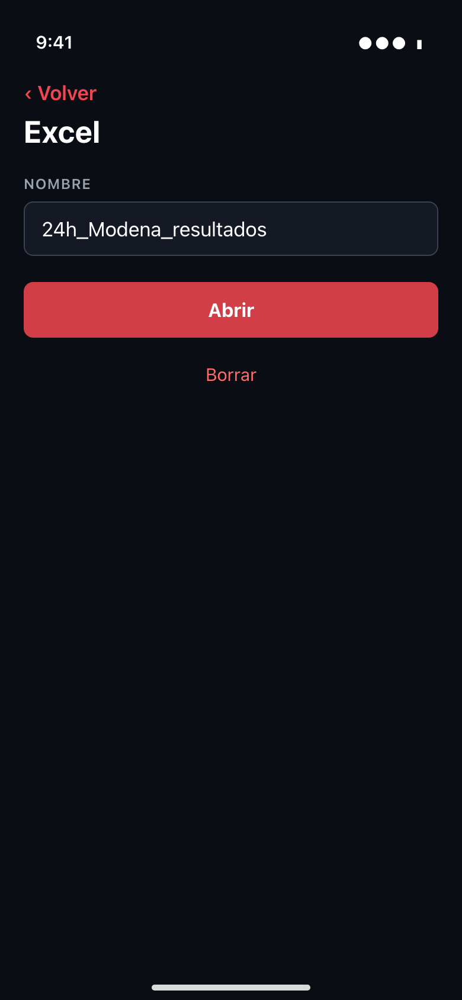
Cada archivo propio se copia a la app, de modo que sigue ahí aunque borres el original. Puedes renombrarlo, abrirlo o compartirlo (Excel y PDF se abren en la app que elijas; las fotos se ven directamente) y borrarlo.
Ajustes
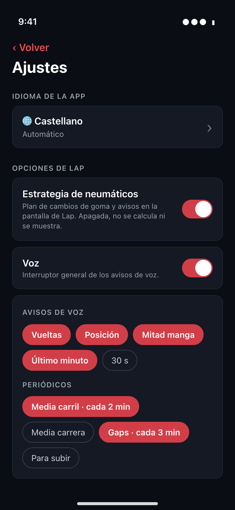
Desde el botón Ajustes del menú configuras:
- Idioma de la app: automático (el del móvil) o uno de los 8. Cambia también la voz que te canta los tiempos y las frases que dice. El euskera no tiene voz de sistema en iPhone y usa la de castellano.
- Estrategia de neumáticos: la enciende o apaga. Apagada, no se calcula y desaparece su acceso en Lap.
- Voz: el interruptor general y los avisos: vueltas, cambios de posición, mitad de manga, último minuto y últimos 30 segundos, y los avisos periódicos (media de carril, media de carrera, gaps y «media para subir»). Un periódico se repite cada N minutos: toca su botón para ciclar entre apagado, 1, 2, 3 y 5 minutos.
- Aplicación (solo Android): la versión instalada y el botón Buscar actualizaciones.
Lo que fijas aquí es con lo que arranca cada sesión. Durante la carrera puedes seguir cambiando los avisos desde Lap, en Voz y ajustes.
Actualizar la app
- iPhone: las versiones llegan por TestFlight. Abre la app TestFlight y pulsa Actualizar; si activaste las actualizaciones automáticas, se instalan solas. Cada versión de TestFlight caduca a los 90 días, así que conviene actualizar antes.
- Android: al abrir la app (y al volver a ella pasadas 6 horas), si en pitwall.es hay una versión más nueva que la tuya, el menú muestra una tarjeta «Hay una versión nueva» con el botón Actualizar. Al pulsarlo, la app descarga el APK y abre el instalador de Android. La primera vez, Android te pedirá permitir a PitWall Lap instalar aplicaciones; concédelo y vuelve a pulsar Actualizar. Más tarde oculta el aviso hasta la próxima vez que abras la app. También puedes comprobarlo cuando quieras en Ajustes → Aplicación → Buscar actualizaciones. La descarga se puede cancelar y, si pasan 30 segundos sin recibir datos, se corta sola.
Si algo no funciona
- Lap no encuentra el servidor. Comprueba que el móvil y el servidor están en la misma WiFi y, en iPhone, que el permiso de Red local está activado. Si sigue sin aparecer, introduce la IP a mano.
- «Sin actividad». El servidor no tiene carrera preparada ni entreno en marcha. Cuando el director la prepare, pulsa Actualizar.
- No sale el entreno de competición. Revisa que PitWall Manager sea 1.56.1 o posterior y que el entreno esté montado (en marcha o en espera entre heats).
- No suenan los avisos del calendario. Mira en los ajustes del móvil que PitWall Lap tiene permiso de Notificaciones. Los avisos cuyo momento ya pasó no se programan.
- La importación dice que no puede leer el archivo. Usa un Excel (.xlsx), por ejemplo la plantilla, y que tenga las columnas Nombre y Fecha.
- La voz no suena con la pantalla bloqueada. Comprueba que el volumen y el interruptor de silencio no estén apagados; la app habla igualmente con el móvil en silencio.
- No me actualiza en Android. Comprueba que tienes conexión a internet y que has permitido a PitWall Lap instalar aplicaciones; también puedes bajar el APK a mano desde la página de PitWall Lap en pitwall.es.
- Novedades (al pie del menú) muestra el historial de versiones de la app; está solo en castellano.